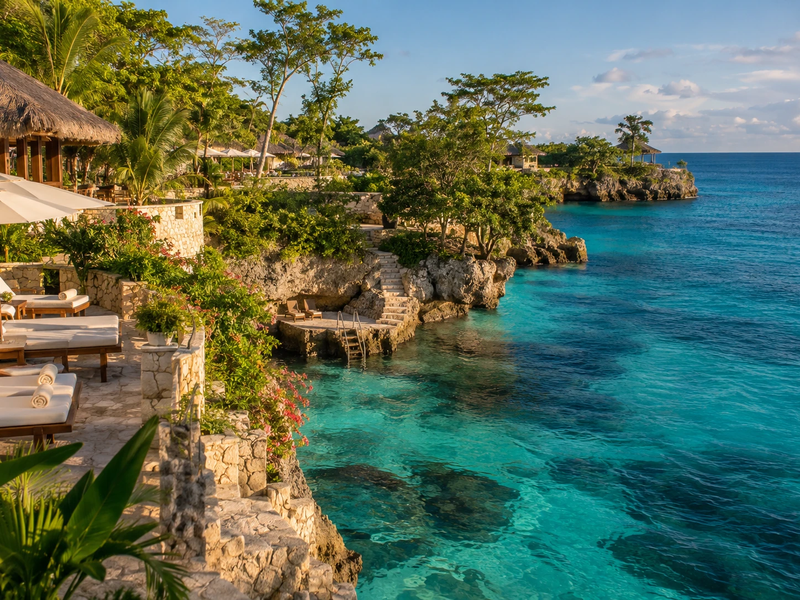
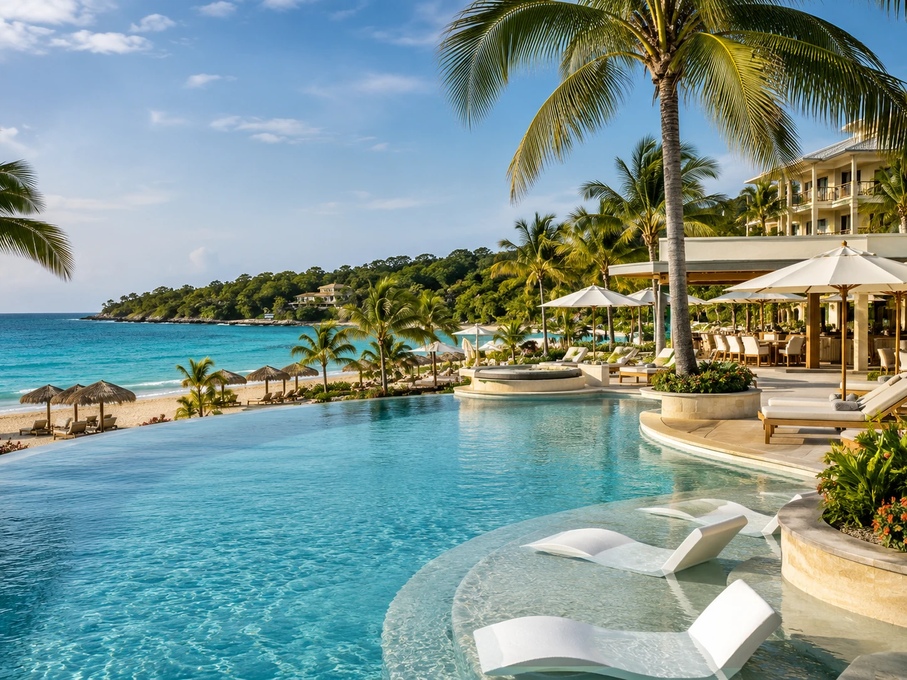

Negril for the classic beach trip
Negril is known for Seven Mile Beach and dramatic sunsets. Couples Swept Away is often compared for a relaxed all inclusive beach stay, Sandals Negril is popular with couples who want a resort focused trip, and Rockhouse is known for cliffside rooms and a more intimate feel.
The biggest decision is whether you want to be directly on the long sandy beach or up on the cliffs, because those are two very different versions of Negril.
Montego Bay for convenience and variety
Montego Bay makes sense when you want a shorter airport transfer and access to restaurants, golf, nightlife, and day trips. Half Moon is known for a large resort setting and extensive amenities, while S Hotel Jamaica gives you a more contemporary stay close to Doctor’s Cave Beach.
This area works well for first time visitors who want options without spending hours getting from the airport to the hotel.

Ocho Rios for people who want to leave the resort
Ocho Rios puts you closer to waterfalls, rafting, gardens, and other excursions. Jamaica Inn is known for a quieter, classic atmosphere, while larger all inclusive properties in the area can offer more activities and restaurants on site.
If you know you want to do more than sit by the pool, this area can give you a better balance.
Adults only or family friendly changes everything
A beautiful resort can still be the wrong resort if the atmosphere does not match the trip. Couples and friend groups may prefer adults only properties, while families may care more about kids clubs, room size, pools, and easy food options.
Read the resort description carefully and look at recent guest photos, not just the polished marketing gallery.
What to check before you pay
Look at the actual beach, restaurant variety, room category, transportation time from the airport, renovation history, and whether the resort requires dinner reservations. Also read recent reviews for recurring complaints rather than focusing on one angry review.
Amenities and policies change, so verify the current details directly with the property before booking.